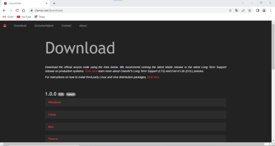
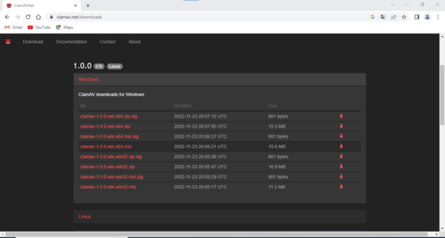
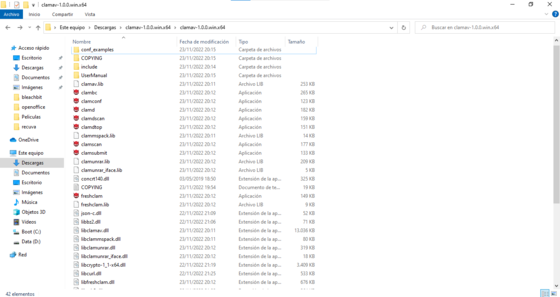

Windows
1Primer paso
Seleccionar el sistema operativo donde queremos instalar el programa de la página oficial de ClamAV.
Seleccionar
2Segundo paso
Descargar la ultima version, dependiendo de la arquitectura de nuestro sistema operativo.
3Tercer paso
Una vez descargado el archivo, lo descomprimimos y depende del servicio que necesitemos ejecutamos ese .exe, por ejemplo si necedsitara hacer un analisis de mi sistema, ejecutaria "clamsavscan.exe".
